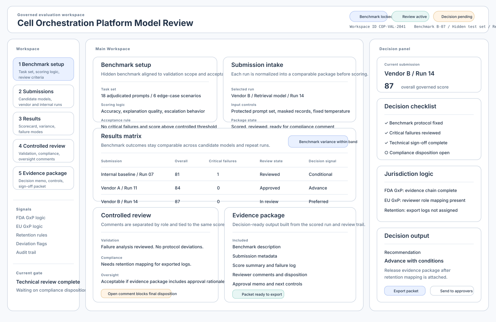

Run submissions against the same benchmark logic.
Regulated AI
Regulated AI Sandbox
A governed evaluation environment where regulated teams can benchmark models, run controlled reviews, and produce decision-ready evidence.
01 / Problem
Regulated organizations need to compare models without turning evaluation into theater.
The sandbox was trying to solve the gap between model claims and defensible decisions. Teams need a controlled way to evaluate vendors or internal models against protected benchmarks while preserving the review trail that quality, compliance, procurement, and oversight teams can trust.
Keep sensitive data inside a governed environment.
Capture what was tested, reviewed, accepted, or escalated.
Package evidence for approval, procurement, and deployment.
02 / Architecture
A controlled submission and review environment.
The architecture is organized around benchmark setup, model submission, sandbox execution, reviewer checkpoints, and evidence package generation. In the fuller RegulatoryModels implementation, this expands into a control plane, entitlement model, sandbox runner, audit trail, and reviewer export flow.
Defines environments, datasets, submissions, roles, and review state.
Executes controlled runs and records results.
Lets human reviewers inspect, annotate, and approve evidence.
Exports the rationale and artifacts behind a decision.
03 / Data
The key data objects are benchmarks, submissions, runs, results, reviewers, and evidence.
The website version uses a wireframe and product narrative. The implementation track in RegulatoryModels contains sample data specs, sample model specs, phase-2 sandbox reviews, and later evidence-package schemas.
04 / Prototype
The website page is the concept demo; RegulatoryModels is the working implementation track.
This page keeps the product story accessible. The working app is local in the RegulatoryModels folder and includes app screens, backend docs, sandbox runner work, and sample data.

{kind=link}
05 / Learned
Solving data access and model submission in real time to create competitive RFPs
The sandbox framing became stronger when it moved away from public competition and toward reviewability. In regulated settings, the product has to show why a model is acceptable, under which conditions, and with what controls.
- A sandbox needs role-based governance as much as scoring logic.
- Decision artifacts are product features, not after-the-fact reports.
- The strongest positioning is an execution layer for accountable regulated AI.